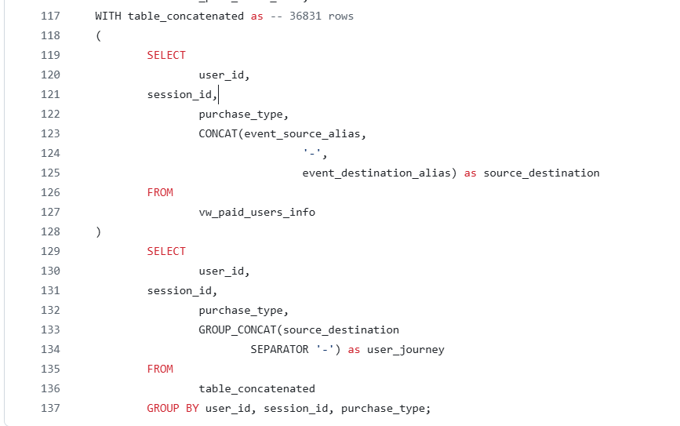
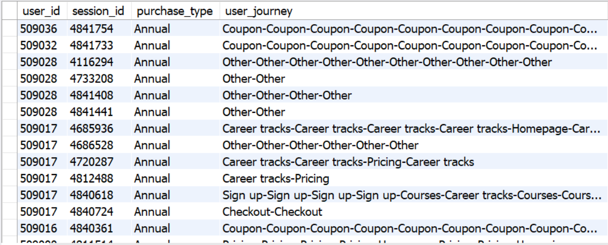

Projects
Click to Conversion: A SQL Project on Tracking Paid User Behavior
This SQL-based project investigates the behavioral patterns of users who converted to paid subscriptions during Q1 2023 on an online education platform. By integrating and analyzing large-scale web interaction data (front_interactions), user session logs (front_visitors), and purchase records (student_purchases), I mapped each user's journey from initial site visits to their eventual subscription.
Using SQL, we focused on users who made their first paid purchase within the Q1 2023 timeframe. For this cohort, we reconstructed session paths by concatenating page transitions, effectively visualizing the sequence of pages visited prior to conversion. This process allowed us to identify common user flows and critical conversion pathways.
The results provide insights into which page sequences—such as visits to the "Courses", "Pricing", or "Checkout" pages—most frequently preceded a successful conversion.
A SQL Project on Retail Sales, Retention, and Cohort Analysis
In this comprehensive SQL project, we performed an end-to-end analysis of the Sample Superstore dataset, focusing on sales trends, profitability, customer behavior, and retention. The project begins with data preprocessing—identifying and removing duplicate entries using ROW_NUMBER() for cleaner insights. We then explored performance by product category and sub-category, discovering that while Technology consistently delivers high profits, certain Furniture items like Tables and Bookcases incur losses despite strong sales.
We analyzed customer segments, regions, and seasonal sales patterns using aggregation and pivoting techniques. A dynamic cohort analysis was implemented to track customer retention across quarters, revealing significant drop-offs in activity after the initial purchase—highlighting the need for improved post-purchase engagement strategies.
We also explored peak sales months by year, identified top-performing products of 2024, and uncovered the most commonly bought product pairs, offering cross-sell opportunities. Lastly, we examined how discounts influence profit across sub-categories, finding that high discounts don't always lead to losses—but require careful targeting to maintain profitability.
Altogether, this project showcases how structured SQL analysis can turn raw retail data into actionable business insights—enhancing strategic planning around product offerings, discounting, marketing, and customer retention.
A SQL Project on Retail Sales, Target Achievement & Customer Behavior Analysis
The results provide insights into which page sequences—such as visits to the "Courses", "Pricing", or "Checkout" pages—most frequently preceded a successful conversion.